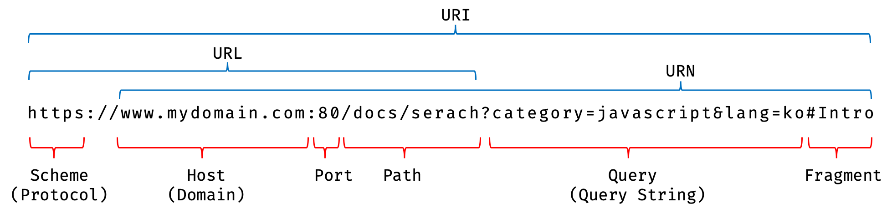

표준 빌트인 객체 표준 빌트인 객체(standard built-in objects / native objects / global objects)는 ECMAScript 사양에 정의된 객체를 말하며, 애플리케이션 전역의 공통 기능을 제공한다. ECMAScript 사양에 정의된 객체이므로 자바스크립트 실행 환경(브라우저 또는 Node.js 환경)과 관계없이 언제나 사용할 수 있다. 표준 빌트인 객체는 전역 객체의 프로퍼티로서 제공된다. 따라서 별도의 선언 없이 전역 변수처럼 언제나 참조할 수 있다.
호스트 객체 호스트 객체(host objects)는 ECMAScript 사양에 정의되어 있지 않지만 자바스크립트 실행 환경(브라우저 환경 또는 Node.js 환경)에서 추가로 제공하는 객체를 말한다. 브라우저 환경에서는 DOM, BOM, Canvas, XMLHttpRequest, fetch, requestAnimationFrame, SVG, Web Storage, Web Component, Web worker와 같은 클라이언트 사이드 Web API를 호스트 객체로 제공하고 Node.js 환경에서는 Node.js 고유의 API를 호스트 객체로 제공한다.
사용자 정의 객체 사용자 정의 객체(user-defined objects)는 표준 빌트인 객체와 호스트 객체처럼 기본 제공되는 객체가 아닌 사용자가 직접 정의한 객체를 말한다.
2) 표준 빌트인 객체
자바스크립트는 Object, String, Number, Boolean, Symbol, Date, Math, Array, Function,JSON, Error 등 40여 개의 표준 빌트인 객체를 제공한다.
생성자 함수인 표준 빌트인 객체 : 프로토타입 메서드와 정적 메소드를 제공 / Math, Reflect, JSON을 제외한 나머지
생성자 함수가 아닌 표준 빌트인 객체 : 정적 메소드만 제공 / Math, Reflect, JSON
생성자 함수인 표준 빌트인 객체가 생성한 인스턴스의 프로토타입은 표준 빌트인 객체의 prototype 프로퍼티에 바인딩된 객체이다.
// isInteger는 Number의 정적 메서드다. // Number.isInteger는 인수가 정수(integer)인지 검사하여 그 결과를 Boolean으로 반환한다. console.log(Number.isInteger(0.5)); // false
3) 원시값과 래퍼 객체
문자열이나 숫자, 불리언 등의 원시값이 있는데도 문자열, 숫자, 불리언 객체를 생성하는 String, Number, Boolean 등의 표준 빌트인 생성자 함수가 존재하는 이유는 무엇일까?
다음 예제를 살펴보자. 원시값은 객체가 아니므로 프로퍼티나 메서드를 가질 수 없는데도 원시값인 문자열이 마치 객체처럼 동작한다.
1 2 3 4 5
const str = 'hello';
// 원시 타입인 문자열이 프로퍼티와 메서드를 갖고 있는 객체처럼 동작한다. console.log(str.length); // 5 console.log(str.toUpperCase()); // HELLO
원시값을 객체처럼 사용하면 자바스크립트 엔진은 암묵적으로 연관된 객체를 생성하여 생성된 객체로 프로퍼티에 접근하거나 메서드를 호출하고 다시 원시값으로 되돌린다. 이러한 객체를 래퍼 객체(wrapper object)라고 한다.
래퍼 객체(wrapper object) : 문자열, 숫자, 불리언 값에 대해 객체처럼 접근하면 생성되는 임시 객체
1 2 3 4 5 6 7 8
const str = 'hi';
// 원시 타입인 문자열이 래퍼 객체인 String 인스턴스로 변환된다. console.log(str.length); // 2 console.log(str.toUpperCase()); // HI
// 래퍼 객체로 프로퍼티에 접근하거나 메서드를 호출한 후, 다시 원시값으로 되돌린다. console.log(typeof str); // string
래퍼 객체의 처리가 종료되면 래퍼 객체의 [[StringData]] 내부 슬롯에 할당된 원시값으로 원래의 상태, 즉 식별자가 원시값을 갖도록 되돌리고 래퍼 객체는 가비지 컬렉션의 대상이 된다.
문자열, 숫자, 불리언, 심벌은 암묵적으로 생성되는 래퍼 객체에 의해 마치 객체처럼 사용할 수 있으며, 표준 빌트인 객체인 String, Number, Boolean, Symbol의 프로토타입 메서드 또는 프로퍼티를 참조할 수 있다. 따라서 String, Number, Boolean 생성자 함수를 new 연산자와 함께 호출하여 문자열, 숫자, 불리언 인스턴스를 생성할 필요가 없으며 권장하지도 않는다.
그 외 원시값인 null과 undefined는 래퍼 객체를 생성하지 않는다. 따라서 null과 undefined 값을 객체처럼 사용하면 에러가 발생한다.
10/8 수업 내용 추가
1 2 3 4 5
const str = 'hello';
// 여기서 str은 원시값이므로 str이 바뀌는 것이 아닌 결과값이 리턴되는 것! const res = str.toUpperCase(); console.log(res, str); // Hello hello
1 2 3
// 1에서와 2에서의 arr 값이 달라짐, but 참조값은 같다 const arr = [1, 2, 3]; // 1 arr.push(4); // 2
객체의 원시값의 차이가 여기에서 나온다. 따라서 위에 예제처럼 하지 말고 불변을 지키자! 즉, 재할당을 통해 주소값을 바꿔준다. -> 리액트에서 활용
브라우저 환경에서는 window(또는 self, this, frames), Node.js 환경에서는 global이 전역 객체를 가리킨다.
전역 객체의 프로퍼티를 참조할 때 window(또는 global)를 생략할 수 있다.
전역 객체는 개발자가 의도적으로 생성할 수 없다. 즉, 전역 객체를 생성할 수 있는 생성자 함수가 제공되지 않는다.
전역 객체는 표준 빌트인 객체와 환경에 따른 호스트 객체(클라이언트 web API 또는 Node.js의 호스트 API), 그리고 var 키워드로 선언한 전역 변수와 전역 함수를 프로퍼티로 갖는다.
let이나 const 키워드로 선언한 전역 변수는 전역 객체의 프로퍼티가 아니다.
1 2 3 4 5 6 7 8 9 10 11 12 13 14 15
// var 키워드로 선언한 전역 변수 var foo = 1; console.log(window.foo); // 1
// 선언하지 않은 변수에 값을 암묵적 전역. bar는 전역 변수가 아니라 전역 객체의 프로퍼티다. bar = 2; // window.bar = 2 console.log(window.bar); // 2
// 전역 함수 functionbaz() { return3; } console.log(window.baz()); // 3
//let 키워드로 선언한 전역 변수 let num = 123; console.log(window.num); // undefined
브라우저 환경의 모든 자바스크립트 코드는 하나의 전역 객체 window를 공유한다. 여러 개의 script 태그를 통해 자바스크립트 코드를 분리해도 하나의 전역 객체 window를 공유하는 것은 변함이 없다.
전역 객체는 계층적 구조상 어떤 객체에도 속하지 않은 모든 빌트인 객체(표준 빌트인 객체와 호스트 객체)의 최상위 객체다. 이는 프로토타입 상속 관계상에서 최상위 객체라는 의미가 아니라, 전역 객체 자신은 어떤 객체의 프로퍼티도 아니며 객체의 계층적 구조상 표준 빌트인 객체와 호스트 객체를 프로퍼티로 소유한다는 것이다.
4.1 빌트인 전역 프로퍼티(built-in global property)
빌트인 전역 프로퍼티는 전역 객체의 프로퍼티를 의미한다. 주로 애플리케이션 전역에서 사용하는 값을 제공한다.
Infinity / NaN / undefined
4.1.1. Infinity
Infinity 프로퍼티는 무한대를 나타내는 숫자값 Infinity를 갖는다.
1 2 3 4 5 6 7 8 9
// 전역 프로퍼티는 window를 생략하고 참조할 수 있다. console.log(window.Infinity === Infinity); // true
// 양의 무한대 console.log(3/0); // Infinity // 음의 무한대 console.log(-3/0); // -Infinity // Infinity는 숫자값이다. console.log(typeofInfinity); // number
4.1.2. NaN
NaN 프로퍼티는 숫자가 아님(Not-a-Number)을 나타내는 숫자값 NaN을 갖는다.
NaN 프로퍼티는 Number.NaN 프로퍼티와 같다.
1 2 3 4 5
console.log(window.NaN); // NaN
console.log(Number('xyz')); // NaN console.log(1 * 'string'); // NaN console.log(typeofNaN); // number
4.1.3. undefined
undefined 프로퍼티는 원시 타입 undefined를 값으로 갖는다.
1 2 3 4 5
console.log(window.undefined); // undefined
var foo; console.log(foo); // undefined console.log(typeofundefined); // undefined
4.2. 빌트인 전역 함수(built-in global function)
빌트인 전역 함수는 애플리케이션 전역에서 호출할 수 있는 빌트인 함수로서 전역 객체의 메서드다.
eval
isFinite
isNaN
perseFloat
parseInt
encodeURI / decodeURI
encodeURIComponent / decodeURIComponent
4.2.1. eval
eval 함수는 자바스크립트 코드를 나타내는 문자열을 인수로 전달받은 후, 전달받은 인수가 표현식이라면 -> 코드를 런타임에 평가하여 값을 생성 전달받은 인수가 표현식이 아닌 문이라면 -> 코드를 런타임에 실행
1 2 3 4 5 6 7 8 9 10 11 12 13 14 15 16 17 18
// 표현식인 문 eval('1 + 2;'); // -> 3 // 표현식이 아닌 문 eval('var x = 5;'); // -> undefined
// eval 함수에 의해 런타임에 변수 선언문이 실행되어 x 변수가 선언되었다. console.log(x); // 5
// 객체 리터럴은 반드시 괄호로 둘러싼다. const o = eval('({ a: 1 })'); console.log(o); // {a: 1}
// 함수 리터럴은 반드시 괄호로 둘러싼다. const f = eval('(function() { return 1; })'); console.log(f()); // 1
// 인수로 전달받은 문자열 코드가 여러 개의 문으로 이루어져 있다면 모든 문을 실행한 다음, 마지막 결과값을 반환한다. console.log(eval('1 + 2; 3 + 4;')); // 7
eval 함수는 자신이 호출된 위치에 해당하는 기존의 스코프를 런타임에 동적으로 수정한다.
eval 함수를 통해 사용자로부터 입력받은 콘텐츠(untrusted data)를 실행하는 것은 보안에 매우 취약하다. 또한 eval 함수를 통해 실행되는 코드는 자바스크립트 엔진에 의해 최적화가 수행되지 않으므로 일반적인 코드 실행에 비해 처리 속도가 느리다. 따라서 eval 함수의 사용은 금지해야 한다.
// 문자열이 아니면 문자열로 변환한 다음, 정수로 해석하여 반환한다. parseInt(10); // -> 10 parseInt(10.123); // -> 10
두 번째 인수로 진법을 나타내는 기수(2 ~ 36)를 전달할 수 있다. 이때 반환값은 언제나 10진수다. 기수를 생략하면 첫 번째 인수로 전달된 문자열을 10진수로 해석하여 반환한다.
1 2 3 4 5 6 7 8
// 10'을 10진수로 해석하고 그 결과를 10진수 정수로 반환한다 parseInt('10'); // -> 10 // '10'을 2진수로 해석하고 그 결과를 10진수 정수로 반환한다 parseInt('10', 2); // -> 2 // '10'을 8진수로 해석하고 그 결과를 10진수 정수로 반환한다 parseInt('10', 8); // -> 8 // '10'을 16진수로 해석하고 그 결과를 10진수 정수로 반환한다 parseInt('10', 16); // -> 16
첫 번째 인수로 전달한 문자열의 첫 번째 문자가 해당 지수의 숫자로 변환될 수 없다면 NaN을 반환한다.
하지만 첫 번째 인수로 전달한 문자열의 두 번째 문자부터 해당 진수를 나타내는 숫자가 아닌 문자와 마주치면 이 문자와 계속되는 문자들은 전부 무시되며 해석된 정수값만 반환한다.
1 2 3 4 5 6 7 8 9 10 11
// 'A'는 10진수로 해석할 수 없다. parseInt('A0'); // -> NaN // '2'는 2진수로 해석할 수 없다. parseInt('20', 2); // -> NaN
// 10진수로 해석할 수 없는 'A' 이후의 문자는 모두 무시된다. parseInt('1A0'); // -> 1 // 2진수로 해석할 수 없는 '2' 이후의 문자는 모두 무시된다. parseInt('102', 2); // -> 2 // 16진수로 해석할 수 없는 'G' 이후의 문자는 모두 무시된다. parseInt('FG', 16); // -> 15
첫 번째 인수로 전달한 문자열에 공백이 있다면 첫 번째 문자열만 해석하여 반환하며 앞뒤 공백은 무시된다.
1 2 3 4 5 6 7
// 공백으로 구분된 문자열은 첫 번째 문자열만 변환한다. parseInt('34 45 66'); // -> 34 parseInt('40 years'); // -> 40 // 첫 번째 문자열을 숫자로 변환할 수 없다면 NaN을 반환한다. parseInt('He was 40'); // -> NaN // 앞뒤 공백은 무시된다. parseInt(' 60 '); // -> 60
4.2.6. encodeURI / decodeURI
encodeURI 함수는 완전한 URI(Uniform Resource Identifier)를 문자열로 전달받아 이스케이프 처리를 위해 인코딩한다.
URI : 인터넷에 있는 자원을 나타내는 유일한 주소, URI의 하위개념으로 URL, URN이 있다.

4.2.7. encodeURIComponent / decodeURIComponent
encodeURIComponent 함수는 전달된 URI(Uniform Resource Identifier) 구성 요소를 인코딩한다. 여기서 인코딩이란 URI의 문자들을 이스케이프 처리하는 것을 의미한다. 단, 알파벳, 0~9의 숫자, - _ . ! ~ * ‘ ( ) 문자는 이스케이프 처리에서 제외된다.
decodeURIComponent 함수는 매개변수로 전달된 URI 구성 요소를 디코딩한다.
// encodeURIComponent 함수는 인수로 전달받은 문자열을 URI의 구성요소인 쿼리 스트링의 일부로 간주한다. // 따라서 쿼리 스트링 구분자로 사용되는 =, ?, &까지 인코딩한다. let enc = encodeURIComponent(uriComp); console.log(enc); // name%3D%EC%9D%B4%EC%9B%85%EB%AA%A8%26job%3Dprogrammer%26teacher
let dec = decodeURIComponent(enc); console.log(dec); // 이웅모&job=programmer&teacher
// encodeURI 함수는 인수로 전달받은 문자열을 완전한 URI로 간주한다. // 따라서 쿼리 스트링 구분자로 사용되는 =, ?, &를 인코딩하지 않는다. enc = encodeURI(uriComp); console.log(enc); // name=%EC%9D%B4%EC%9B%85%EB%AA%A8&job=programmer&teacher
dec = decodeURI(enc); console.log(dec); // name=이웅모&job=programmer&teacher
4.3. 암묵적 전역
1 2 3 4 5 6 7 8 9 10
var x = 10; // 전역 변수
functionfoo () { // 선언하지 않은 식별자에 값을 할당 y = 20; // window.y = 20; } foo();
// 선언하지 않은 식별자 y를 전역에서 참조할 수 있다. console.log(x + y); // 30
위 예제에서 foo 함수 내의 y는 선언하지 않은 식별자이다. 따라서 y = 20이 실행되면 참조 에러가 발생할 것처럼 보인다. 하지만 선언하지 않은 식별자 y는 마치 선언된 전역 변수처럼 동작한다. 이는 선언하지 않은 식별자에 값을 할당하면 전역 객체의 프로퍼티가 되기 때문이다.
자바스크립트 엔진은 y = 20을 window.y = 20으로 해석하여 전역 객체에 프로퍼티를 동적 생성한다. 결국 y는 전역 객체의 프로퍼티가 되어 마치 전역 변수처럼 동작한다. 이러한 현상을 암묵적 전역(implicit global) 이라 한다.
하지만 y는 변수 선언 없이 단지 전역 객체의 프로퍼티로 추가되었을 뿐, 변수가 아니므로 변수 호이스팅이 발생하지 않는다.
또한 변수가 아니라 단지 프로퍼티인 y는 delete 연산자로 삭제할 수 있다. 전역 변수는 프로퍼티이지만 delete 연산자로 삭제할 수 없다.
1 2 3 4 5 6 7 8 9 10 11 12 13 14 15 16 17 18
// 전역 변수 x는 호이스팅이 발생한다. console.log(x); // undefined // 전역 변수가 아니라 단지 전역 객체의 프로퍼티인 y는 호이스팅이 발생하지 않는다. console.log(y); // ReferenceError: y is not defined
var x = 10; // 전역 변수
functionfoo () { // 선언하지 않은 식별자에 값을 할당 y = 20; // window.y = 20; } foo();
delete x; // 전역 변수는 삭제되지 않는다. delete y; // 프로퍼티는 삭제된다.